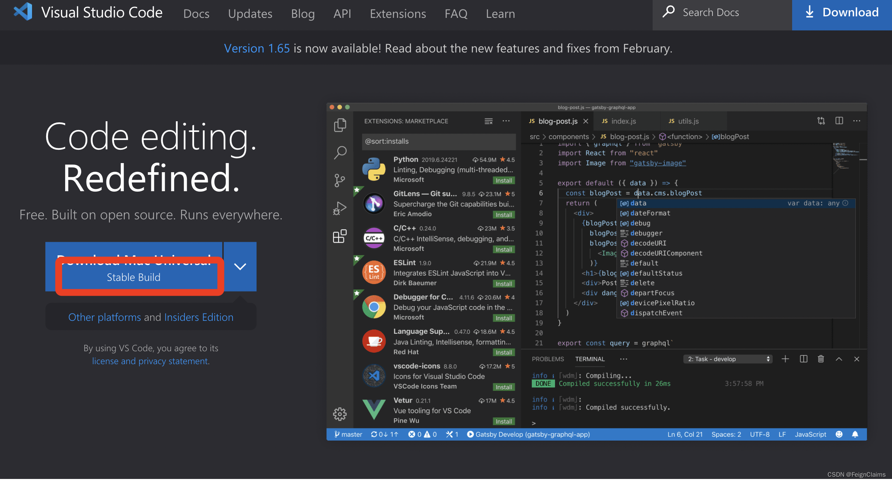
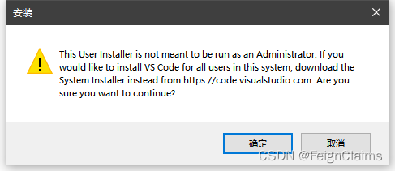
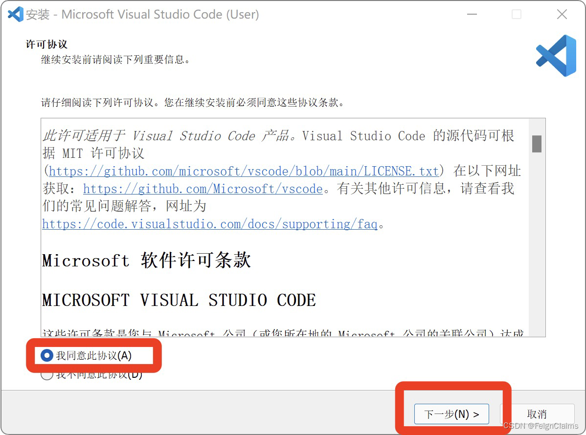

VSCode
下载
VSCode：通过官网下载 （需要注意的是，通过百度搜索到的前几个结果都不是官网！）。
 VSCode: 通过官网下载
VSCode：我备份的安装包 （该安装包为 x86_64，可能与你的电脑架构不对应）。
安装
打开你所下载的 VSCode 安装包。
如果出现如图警告，点击 确定。
备注
这是由于我们下载的是 用户安装包（User Installer） 而非 系统安装包（System Installer）。
如需 系统安装包，请前往 VSCode：通过官网下载 下滑至最底部下载。
 VSCode 用户安装包警告
在第一页点【我同意此协议】，之后一直点【下一步】即可。
 VSCode 安装
关闭之后自动启动的软件。